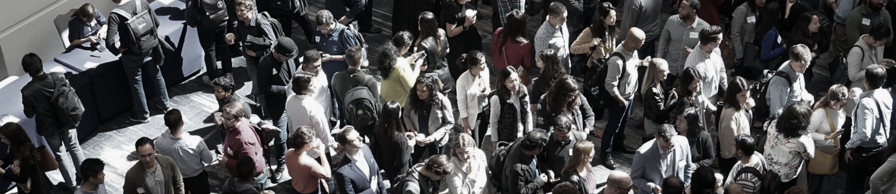

Entreprises innovantes en sécurité
Développez votre entreprise au Québec dans la sécurité, l'aéronautique, l'aérospatial, l'intelligence artificielle, la cybersécurité et la défense.
En savoir plus
Auvergne-Rhône-Alpes x Québec x francophonie canadienne
Le plus grand rendez-vous francophone réunissant experts, décideurs et acteurs de l'innovation des deux côtés de l'Atlantique.
Développez votre entreprise au Québec dans la sécurité, l'aéronautique, l'aérospatial, l'intelligence artificielle, la cybersécurité et la défense.
En savoir plusLe livre blanc des Entretiens Jacques Cartier 2025 prolonge les réflexions portées par les colloques et conférences.
DécouvrirLes EJC rassemblent, alternativement sur chaque territoire, des milliers d'experts et de décideurs autour d'évènements francophones et interdisciplinaires.
Pendant les EJC, des experts et décideurs de tous horizons collaborent, font des rencontres marquantes et saisissent de nouvelles occasions pour contribuer ensemble à l'évolution de la société.

C'est en croisant les expériences des mondes économique, académique, institutionnel, culturel et scientifique que les EJC donnent vie aux visions communes.
Les EJC sont organisés par le Centre Jacques Cartier. Chaque évènement est co-porté par deux membres de son réseau de partenaires des deux côtés de l'Atlantique.
Découvrir l'appel à projets
Aéroports de Montréal

PULSALYS

Lyonbiopôle

CIRANO